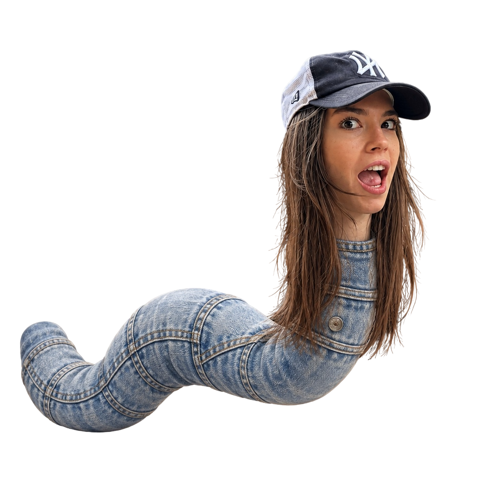

Если не сможешь поймать точку —
ты самая красивая девушка в мире!
Попыток: 0
Ближе всех: —
Поймай точку курсором...
Загадай число и если кубик покажет его, то ты самый любимый человек в моей жизни
Выбери число и брось кубик…
Покорми Алину на день рождения: собери все вкусняшки!
Съедено: 0 / 100
